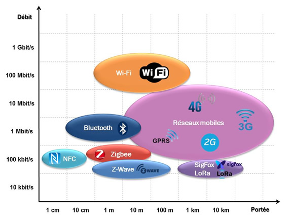

Ce site reprend ce qui est présent sur l'ENT lyceeconnecte
Il permet d'accéder facilement au cours, l'accessibilité à l'ENT risquant d'être mise à dure épreuve suite au nombre très important de connexions.
Mettez l'adresse de ce site dans vos favoris, pour y accéder directement.
Correction des questionnaires sur le chapitre de l'informatique embarquée (dans chaque partie concernée).
Travaux à rendre :
Le fichier suivant est une poursuite du cours : fichier
À faire le mardi 24 mars :
Sur la dernière page, on vous demande de compléter un tableau. Le faire sur un traitement de texte (privilégiez LibreOffice ou OpenOffice à Word) - vous n'êtes pas obligés de présenter sous la forme d'un tableau, c'est à vous de voir.
Dans cette classification, le smartphone appartient finalement à deux colonnes différentes. Expliquer quelle(s) utilisation(s) permet(tent) de le classer dans chacune de ces colonnes (se servir des définitions).
Voici la suite du cours (c'est une partie que je présente dans chaque chapitre) : II - Un peu d'histoire
Voici la suite du cours : internet des objets
À faire le mardi 24 mars :
Répondre sur un fichier traitement de texte aux questions suivantes : questionnaire
Les réponses pourront s'appuyer (et c'est même conseillé) sur les deux documents suivants :
Pour définir la domotique, on peut regarder cette vidéo.
À faire pour le mardi 31 mars :
Waze est une application de guidage GPS. Regarder la vidéo et répondre aux questions du document en lien.
Pour répondre, le faire de nouveau sur un traitement de texte (ne recopier que les réponses qui vous semblent bonnes pour les questions 1 et 2).
Vous pouvez insérer l'image jointe dans votre fichier en ajoutant des zones de texte pour compléter par les chiffres adéquats. Pour ceux qui ne savent pas faire, voici une petite vidéo explicative.
La première partie de ce travail (semaine du 06 avril) consiste en une étude de différents aspects des réseaux sociaux.
Répondez sur un traitement de texte aux questions (ceux qui n'auraient pas d'ordinateur peuvent le faire sur feuille et m'envoyer des photos (par mail ou moodle).
Je ne vous demande pas de compléter le fichier d'origine pour avoir un fichier final plus léger.
Pour la question 1, vous vous appuierez sur l'article de Vincent Matalon du 23/03/2018 qui est aussi accessible en version pdf.
Pour les autres questions, les liens éventuellement utiles sont dans le document.
Il y a également le document sur les conditions d'utilisation de Google.
Dans cette deuxième partie, on symbolise un petit réseau social sous la forme d'un graphe.
Vous devrez répondre aux différentes questions au cours de la semaine du 13 avril (sur traitement de texte ou sur la forme d'une photo - la graphe pourra être construit sur feuille et inéré sous la forme d'une image dans votre fichier odt).
L'activité se terminer par une petite question qui montre si vous avez copris la vidéo dont le lien est donné dans le document.
Vous trouverez enfin des vidéos que je vous encourage de visionner pour vous interroger sur vos pratiques et sur la protection de vos données.
Regarder la vidéo ci-dessous puis répondre au questionnaire sous moodle :
Voici le contenu de la partie 1 sur la définition du web.
J'ai ajouté à la fin de cette partie une vidéo reprenant le lien entre serveur et client.
Voici la partie du cours sur l'histoire du Web.
Cette partie est prolongée par un deuxième questionnaire sur moodle. Les réponses aux questions ne sont pas dans le cours, mais elles doivent se trouver facilement sur le Web...
Voici la partie du cours sur la construction d'une page Web et la mise en forme avec le langage CSS.
Vous y découvrirez des éléments essentiels permettant de comprendre comment on construit une page Web (à l'aide d'un fichier HTML) et comment on le rend plus ergonomique (fichier CSS).
Cette partie vous montre également que le navigateur
permet d'identifier les différents composants présents dans une page Web (exploration du DOM).
La partie d) du pdf vous explique le travail à faire, je vous demande juste de faire des modifications soit du côté du fichier html soit du fichier css.
Pour réaliser le travail, vous devrez vous rendre sur cette page.
Ce travail vous obligera à modifier les deux fichiers présents dans le .zip. Envoyez moi alors vos fichiers modifiés :
Voici la partie du cours sur les moteurs de recherche.
Le travail sera à effectuer sur l'application Jupyter de lycée connecté.
Dans cette vidéo, vous trouverez comment récupérer le ficheir jupyter et comment me renvoyer votre travail.
{kind=link}